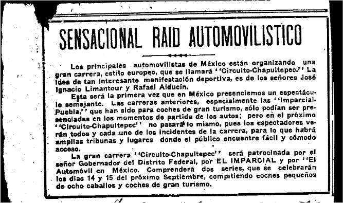
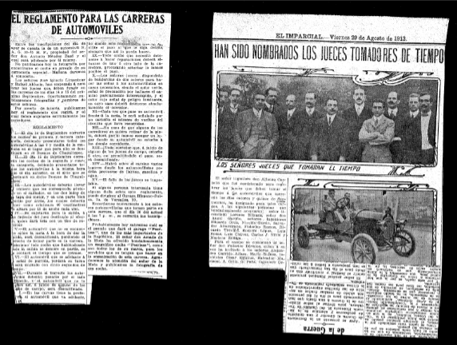
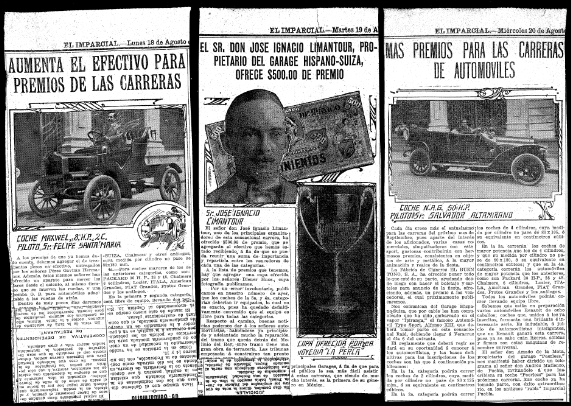
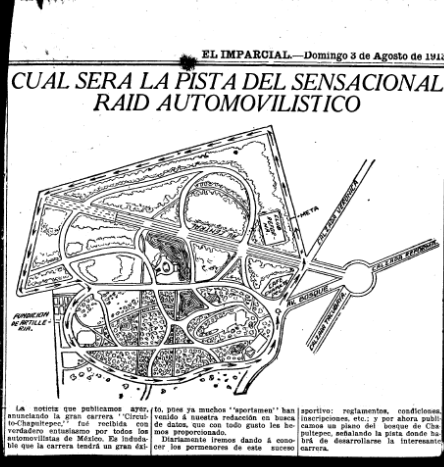
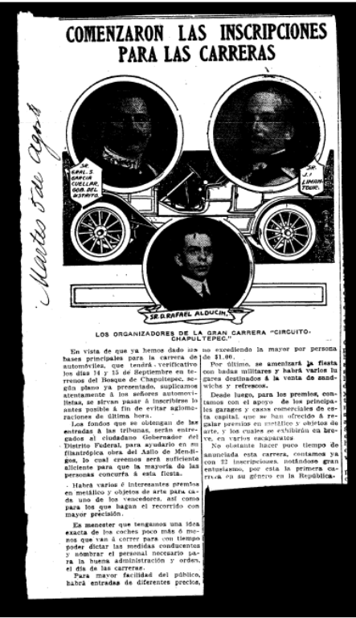
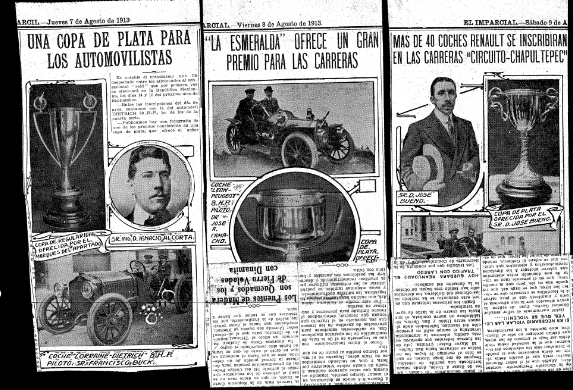
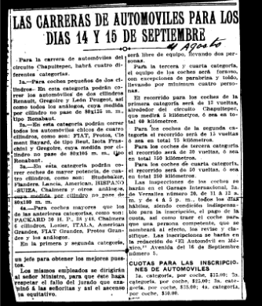

Introducción
Los estudios que han abordado el tema del deporte moderno han demostrado que tuvo su origen en la Inglaterra decimonónica y que se desarrolló plenamente a finales de esa centuria. Algunos autores han señalado que los procesos históricos que permitieron su surgimiento se relacionan con el proceso de civilización no planificado, cuyo sentido era la formación del Estado moderno, la industrialización de las sociedades, la posibilidad de contar con mayores tiempos de ocio ocupado por las elites en esas actividades de competencia y espectáculo y el proceso por medio del cual se fueron limitando las conductas violentas de la sociedad. Todo ello desembocó en la reglamentación negociada, escrita y difundida de las normas con que debian practicarse esos ejercicios en torno a los nuevos espacios de sociabilidad: los clubes donde las elites establecieron redes o lazos de afinidad, basados en intereses comunes profesionales, ideológicos o generacionales. Se ha mostrado, por otro lado, que estos clubes fueron fundamentales para su institucionalización y reproducción, y que además fueron como las sociedades decimonónicas en las que surgieron elitistas y discriminatorios (1).
Este artículo se propone, como contribución a estas discusiones y debates, mostrar que uno de los intereses compartidos por las elites fue el económico y que este dio lugar a la formación de los clubes deportivos. Se invita a considerar este factor como uno de los que impulsó de manera significativa el desarrollo de las actividades deportivas y la integración de sus clubes. Al mismo tiempo, el artículo argumenta que, en el caso del automovilismo en México, la promesa de beneficio económico estimuló la actividad, pues los interesados en el automóvil y sus carreras además de divertirse y competir invirtieron tiempo, energía y recursos económicos en el automovilismo al advertir de inmediato las ventajas financieras que el automovilismo representaba. Las carreras de coches requerían el establecimiento de una serie de industrias y comercios que, además de facilitar el entretenimiento deportivo, impulsan la creación de industrias y comercios en México, como la automotriz, la turística, la construcción de vías de comunicación, los talleres mecánicos y las gasolineras. Para demostrar lo anterior, este artículo se ocupa de analizar y relatar cómo fue que este medio de transporte llegó al país, como comenzó a regularse su uso y como se incorporó a la vida cotidiana. Después presenta una breve reseña de la historia de los primeros clubes y asociaciones automovilísticas y expone cómo a partir de esas organizaciones y con la coincidencia de los intereses económicos de sus integrantes se realizaron las primeras competencias de ese caro, peligroso y glamuroso sport (2).
Esto explica porque durante los últimos años del siglo XIX y la primera década del XX, las diversas publicaciones periódicas que circularon en México comenzaron a incluir notas relativas al automóvil. Con tono de sorpresa, admiración, alarma y hasta temor, los articulistas dieron a conocer a los mexicanos el nuevo invento que-sustituyendo la tracción animal por una de vapor, eléctrica o de hidrocarburo podía transportar personas y mercancías a mayor velocidad y con más comodidad. La prensa dio cuenta de los progresos técnicos que los constructores de la incipiente industria automotriz desarrollaron en Europa y en los Estados Unidos. En ella se habló de las mejoras implementadas en los motores, neumáticos, baterías, carrocerías, y un sinfín de consideraciones técnicas como las diseñadas para evitar las explosiones, aumentar la velocidad, disminuir las vibraciones y el ruido que hacían esos pioneros vehículos. Pero además se compararon las ventajas experimentadas entre los que eran movidos por vapor, por electricidad y los que usaban gasolina, hasta señalar cómo y por que estos últimos iban ganando la batalla. Una de las principales razones que explicaban su triunfo respondía a que su producción resultaba más económica y a que los mismos propietarios y fabricantes promovieron la construcción de centros de abastecimiento de hidrocarburos, es decir, gasolineras.
Los articulistas dieron cuenta de las compañías constructoras e incluyeron estadísticas económicas; reseñaron los beneficios que, con el fin de estimular esa industria, impulsaron algunos gobiernos que valoraron los primeros coches como un medio que facilita las comunicaciones e incorpora a la vida política y comercial comunidades que hasta entonces habían permanecido aisladas al no contar con servicios ferroviarios; explicaron la manera en que esas autoridades empezaron a utilizarlos para ofrecer mejores servicios a sus gobernados como los primeros carros de bomberos y hasta mostraron como los comenzaron a utilizar los ejércitos. También dieron cuenta de cómo el uso del automóvil se fue introduciendo en la vida cotidiana de las sociedades como medio de transporte de mercancias, de transporte publico a traves del ómnibus especie de camión que transportaba personas dentro de las ciudades y como servicio público particular en lo que serían los taxis. Una nota curiosa reseña, por ejemplo, como una compañía instruyó a sus choferes durante un curso de manejo: tomaron lecciones para aprender a conducir e hicieron recorridos que incluyen la conducción en curvas, subidas, vueltas y bajadas con personas simuladas, y atravesando las calles. En otra, se comentó el curioso caso de una mujer que comenzó a trabajar como chofer taxista en París.
Corrió mucha tinta para describir cómo las grandes personalidades europeas y estadounidenses entre las que se incluían reyes, reinas, aristócratas, presidentes, primeros ministros y potentados hacían sus viajes en automóvil por ciudades y carreteras. Hubo artículos dedicados a la moda en el vestir que impusieron esos personajes y sus vehículos; mientras que en otros se discute, desde los presupuestos de la higiene, sobre los posibles beneficios que aportaba a la salud el viajar en automóvil. De igual modo, aunque de manera alarmante, algunos informaron a sus lectores de los constantes accidentes provocados por los coches, entre los que se contaban las muertes sufridas por conductores, tripulantes y, en especial, las de los transeúntes, que desacostumbrados a convivir con "esas maquinas" se veían constantemente lastimados, así como las medidas tomadas por las autoridades para reglamentar el uso vehicular y procurar la seguridad de todos. Incluso se mencionó que eran tantos y tan graves los accidentes que algunos peatones habían amenazado con repeler a tiros las agresiones de las que eran objeto por parte de los automovilistas. Otros articulistas denunciaron esos excesos con un tono de resentimiento, pues solo los ricos podían poseerlos.
Se escribió también sobre las nuevas políticas adoptadas para regular su uso, como los reglamentos de tránsito, el registro vehicular (a partir de un número de placa asignada a cada coche), las velocidades máximas autorizadas en algunas ciudades y las sanciones impuestas a los conductores. En muchos textos se afirmó que existía la necesidad de construir más y mejores vías de comunicación: carreteras y calles, avenidas y calzadas en las ciudades, así como contar con centros de reabastecimiento de gasolina o energía eléctrica. En algunos de ellos se indicaron, con tintes de orgullo, los logros alcanzados en esas materias en diversos países y otros confesaron preocupación respecto a los daños que podían provocar los coches al ambiente por el humo expelido y las polvaredas que levantaban en su camino. Otro aspecto interesante que rescato la prensa mexicana de lo sucedido en Europa y Estados Unidos, fue la publicación de las primeras revistas y manuales especializados en la industria automotriz, además de artículos en los que se hizo un recuento de la historia del automovil. Esas noticias comenzaron a informar de las estrategias seguidas por algunos constructores de vehículos que, con el fin de aumentar sus ventas, trataron de disminuir el costo de producción, realizaron concursos en los que premiaban a los inventores que perfeccionaron al automóvil y exposiciones para mostrar al público los progresos de las nuevas marcas y modelos.
Ahora bien, toda la información ofrecida en la prensa sobre los primeros tiempos del automóvil muestra que la conducción de esos vehículos fue considerada ante todo como una actividad deportiva, por lo que se informó de manera continua y hasta detallada sobre la formación de los clubes de automovilismo que, tanto en Europa como en Estados Unidos, reunían a los interesados. Clubes que participaron de manera activa con los constructores en la organización y realización de esos eventos de propaganda como las carreras y exposiciones, y que eran muy atractivas para quienes estaban directamente involucrados como para el público en general. Muchas de esas competencias fueron internacionales, de grandes distancias y de velocidad. En ellas se reconoció y premió tanto al automóvil ganador como al fabricante, con lo que se probaba la superioridad de los constructores y las habilidades de mecánicos y chauffeurs o pilotos. En casi todas esas notas se registró el récord y se empezó a elogiar al ganador como el "rey del automovilismo".
El automóvil dio así origen a varios oficios y profesiones como ingenieros, mecánicos, choferes y pilotos. También daría un indispensable impulso a la industria del turismo muchas personas comenzaron a hacer excursiones a sitios lejanos y sería fundamental para desarrollar otras como la del caucho, la química y la petrolera, así como para proveer insumos básicos como llantas, aceites y gasolina. Fue tal el revuelo causado por el automóvil que, hacia finales del siglo XIX, los constructores afirmaban que era tal la demanda que no se alcanzaban a satisfacer los pedidos. La llamada fiebre del automóvil en la prensa fue presentada como símbolo de modernidad, progreso y poder de las naciones, así como señal de la capacidad económica de los individuos que los poseían. Conscientes de lo que tenían en las manos, los primeros constructores, dueños de automóviles y choferes, afirman, y con toda la razón, que este representaba "el inicio de un movimiento universal" que era "revolucionario de la moda y las costumbres" (3).
-
El automovil en Mexico
-
Los primeros clubes automovilistas
-
De excursiones turisticas a competencias
-
La primera competencia
A finales del siglo XIX arribó el automóvil a México cuando las familias Limantour y De Teresa importaron en 1896 los primeros autos. En muy pocos años fue apreciado y promovido por autoridades y miembros de la élite como uno más de los símbolos evidentes de la modernidad y el progreso económico alcanzado durante el régimen porfirista (4). El auto fue, junto con el alumbrado, el teléfono, el telégrafo, el ferrocarril, los tranvías eléctricos y el cine, uno de los inventos que al amparo de la revolución industrial y del capitalismo sorprendieron y maravillaron a quienes los poseían y disfrutaban, y a aquellos que los observaban. En materia de comunicaciones, el automóvil fue, sin duda alguna, como señala Elisa Speckman, el elemento que al iniciar el siglo XX produjo una verdadera revolución en el transporte (5).
La prensa mexicana, además de dar cuenta de los adelantos e incidencias del automovilismo internacional, publicó artículos en los que informó al público el desarrollo del automóvil en el país. Se escribió sobre el terror provocado por los accidentes, los primeros reglamentos para regular el tránsito en las ciudades y estadísticas económicas sobre la importación de vehiculos; se informo y discutir la construcción de carreteras y mejora general de las vias de comunicacion, asi como sobre el desarrollo de los primeros servicios de transporte público, omnibuses y servicios de alquiler. También publicaron otros tan diversos como los relativos a la moda en el vestir y curiosas notas históricas en las que se afirmaba, por ejemplo, que en 1894, por iniciativa de los señores Mohler y De Gres, se fabrico el que por muchas décadas sería el único automóvil "hecho en México" o el acontecimiento singular, que en 1906 se transmitió el primer mensaje oficial entre un país y otro a través del automovil (6).
También se discutieron temas desde los postulados de la higiene, como los beneficios que podía o no aportar a la salud viajar en coche; la nutrición que se recomendaba debían seguir los conductores y en algunos artículos se debatió sobre las características psicológicas de los automovilistas por su vinculo con la velocidad y los accidentes, en especial, la de los pilotos que practicaban el automovilismo deportivo. En uno de ellos se expone, por ejemplo, que había quienes se preguntaban si la afición por la velocidad produce "la manía por el homicidio", si existe "una perturbación mental producida por el automóvil" y se indicaba que especialistas observadores del fenómeno sostienen que los pilotos no padecen "locura", que conservan íntegras sus facultades mentales y que los accidentes se deban a las imperfecciones de las máquinas, a la torpeza de los conductores y a que algunos conducían alcoholizados (7). En un periodico se comparó a los pilotos con el cometa Daniel, que en 1907 se acercó a la Tierra. El autor se preguntaba si los cometas eran como los héroes del automovilismo, unos locos que devoran el espacio solo por el placer de correr a la muerte?" (8). En otro diario, sobre la misma sensación de peligro que padecían el conductor y los peatones, se afirmaba: "un enemigo más terrible que los jueces de Galilea y más peligroso que la Inquisición acaba de nacer, y ese enemigo es el automóvil" (9).
En México, como en esas otras capitales y ciudades, el automóvil logró en muy pocos años progresos notables en ámbitos distintos. Se le valoró como un útil medio de transporte público y privado de personas y mercancías, y como tal fue sustituyendo a los medios de transporte de tracción animal. A los tranvías eléctricos se sumaron los omnibuses y pronto se empezaron a realizar gestiones para establecer en la capital y otras ciudades servicios privados o taxis, que complementaron los servicios ofrecidos por los carruajes y camiones de mulas hasta desplazarse definitivamente. Los industriales y comerciantes también los fueron incorporando para transportar todo tipo de mercancías y las autoridades de gobierno lo hicieron para mejorar servicios como las postales. Con el desarrollo de las carreteras también transportaban personas y mercancías a grandes distancias.
Desde 1899, por ejemplo, se otorgó la concesión a una compañía americana para que estableciera en la ciudad de México "el servicio de coches y ómnibus automóviles"; en 1901, se inauguró un servicio que llevaba paseantes de la calzada de la Reforma al Bosque de Chapultepec y pronto se usaron hasta para transportar cadáveres al panteón (10). Otras empresas, ademas de usarlos para enviar sus mercancías, hicieron publicidad de sus productos rifando automóviles, como lo hizo la empresa cigarrera El Buen Tono S.A., y en poco tiempo se integraron a las festividades públicas, por ejemplo, a los "combates de flores y concursos de carruajes", con que se celebraban los aniversarios de la batalla de Puebla sucedida el 2 de abril de 1867 bajo el liderazgo del presidente Diaz (11).
El automóvil fue sin duda símbolo de modernidad, progreso y posición económica. Fue también un invento que transformó la cultura de la población. Un articulista afirma en 1906, cuando apenas se tenían 800 registrados por las autoridades en la ciudad de México (12), que a consecuencia del automóvil toda la vida cotidiana se hacía de prisa: se vivía, leía, comía, dormía y viajaba a su velocidad (13). Se puede afirmar, por lo dicho en la prensa nacional, que además el automóvil en México fue apreciado por la mayoría como un artículo de lujo accesible sólo para los más ricos y poderosos y a su conducción como una más de las actividades deportivas de las que disfrutaba la elite. Y es que, en efecto, en México, como en el resto del mundo, los primeros propietarios y conductores de automóviles así como sus primeros promotores, fueron miembros de la élite política y económica del país. Individuos que no solo disfrutaron al usarlo como medio de transporte, sino que y quizá principalmente hicieron de la conducción del automóvil un nuevo, distinto y espectacular sport. De tal manera es posible afirmar que al iniciar el siglo XX llegó el automóvil a México y con él también su práctica deportiva.
Este medio de transporte revolucionó el país en materia de comunicaciones, transformó la concepción del tiempo y las distancias e imprimió su sello en el ámbito del deporte moderno, al incorporar a ese mundo de las diversiones y espectáculos, uno atrevido y singular: las carreras de coches. Fue tan importante el aspecto deportivo del automóvil que es posible sostener que esta actividad funcionó como un detonante de su desarrollo en el país. En 1906 se afirmaba que "todas las familias ricas tienen uno y que México sería aficionado a este post porque a fin de cuentas es símbolo de la modernidad y del progreso" (14). Fueron ellos quienes organizándose en asociaciones deportivas con los comerciantes del ramo, es decir los Garajes compañías importadoras y vendedoras de vehículos que también funcionaban como talleres mecánicos de reparaciones y venta de insumos, promovieron la importación de los vehículos, obras para mejorar las vías de comunicación en las ciudades, construcción de carreteras, instalación de lo que con el tiempo serían las gasolineras y dieron un notable impulso a una nueva actividad: el turismo (15).
En 1902 los señores Pablo Escandon, Julio M. Limantur, Manuel Buch y Ramon Corona convocaron a los propietarios de automóviles de la ciudad de México, y a otras personas interesadas en ese medio de transporte, a una reunión o meeting que se verificaría en la casa del mayor Escandon. El objetivo de los convocantes era discutir y acordar la formación de un club automovilista en la ciudad de México, similar al "Automobile Club de París, al Automobile Club of America de Nueva York y a otras asociaciones similares europeas y norteamericanas". La formación de ese club mexicano tendrá por objeto promover el "sport del automovilismo" en el país y desarrollar el interés de las autoridades y particulares para mejorar los caminos de la ciudad y sus alrededores (16).
Si bien en esta investigación se desconocen las reuniones requeridas, lo discutido en ellas y la lista de asistentes, lo que resulta claro es que en mayo de 1903 la prensa mexicana informó a la población que se acababa de crear en la capital del país un centro recreativo denominado Automóvil Club de Mexico y que dicha asociación tiene por objeto como meses atrás había informado los convocantes al meeting fomentar el sport automovilista en todo el pais, asi como la industria correspondiente y el arreglo de los caminos de la ciudad y los carreteros. También comunicaron que el Club tendría su sede dentro del Bosque de Chapultepec, en un espacio ofrecido por el Ministro de Hacienda, el señor Jose Yves Limantour, quien era un gran aficionado al automovilismo deportivo y, como señaló Clementina Diaz y de Ovando, tenia tambien un gran amor por el Bosque. Al mismo tiempo que informaron que el Club estaría destinado para uso exclusivo de los socios y que se tenía planeado que contará con todas las comodidades "a la última moda", así como con espacios de estacionamiento para los automóviles de los selectos miembros, que periódicamente organiza concursos, carreras y otras actividades encaminadas a "despertar el entusiasmo por este sport" y que se planeaba inaugurar el edificio sede del Club cuando fuera concluido con una "gran revista de automóviles" (17).
El señor Limantour fue nombrado presidente honorario y el presidente efectivo fue el mayor Escandon. La asociación fue constituida por 80 acciones con un valor de 600 pesos cada una. Reunido el capital, casi 50 mil pesos, el Club celebró un contrato de arrendamiento con la Junta Superior del Bosque de Chapultepec y comenzó la construcción del edificio en el que invirtió entre sesenta mil y cien mil pesos (18). En el contrato se estipulaba que la Junta cede al Automóvil Club un espacio del Bosque en arrendamiento por el término de 20 años; mientras que el Club se comprometía a construir un edificio conforme a los planos y presupuesto aprobados por la Secretaría de Gobernación y se obligaba a conservar y dar mantenimiento a las instalaciones y jardines del Bosque circundantes. Se aclaraba que el gobierno conservaba la propiedad del terreno y que solo se otorgaba al Club el derecho de su uso, que el gobierno adquirirá la propiedad de las construcciones que en ese espacio edificara el Club y que quedarían prohibidos los juegos de azar autorizando únicamente el billar, el boliche y, tiempo después, los propios para senoras (19).
El plan de la construcción del edificio coincidió con los proyectos con los que el régimen porfirista planeó conmemorar en 1910 el Centenario de la Independencia, lo que favoreció enormemente a la asociación como afirmó Clementina Diaz. Con la intención de mostrar a propios y extraños la ciudad de México como una urbe moderna y a la mexicana como una sociedad civilizada, se realizaron obras diversas para ampliarla y embellecerla. Limantour fue uno de los funcionarios que participó con mayor entusiasmo en aquellas obras. Bajo su impulso se rescató del abandono en que se encontraba el Bosque, para lo cual se realizaron reparaciones al castillo, se adornó con árboles y plantas diversas, se construyeron amplias avenidas y jardines y se arreglaron los lagos artificiales. Obras que serían coronadas con el hermoso edificio afrancesado sede del Automóvil Club de México (20). La construcción inició en 1906 en ese esquema, en los terrenos ofrecidos por el ministro de Hacienda, a orillas de uno de los lagos, al pie del castillo y con vista al Alcázar en un espacio a todas luces privilegiado que contribuía a dar mayor realce a esa aristocracia asociación y que también embellecer al Bosque.
El lugar contaba con una hermosa terraza, una calzada exclusiva para automóviles, un embarcadero cercano y un espacio para estacionamiento. Como se observa en algunas de las ilustraciones que acompañaron las notas, se trataba de un espacio pequeño pero muy elegante. En estas imágenes sobresalen los autos de carreras conducidos por pilotos acompañados de sus mecánicos, a la vez que se trata de hacer sentir al observador la sensación de la velocidad en algunos dibujos. En 1908, un diario informó que el Club no había cumplido con algunas de las cláusulas establecidas en el contrato de arrendamiento, por lo que el edificio (que ya estaba terminado) había permanecido abandonado durante varios meses y no se había realizado su inauguración formal, aunque se había utilizado para ofrecer una reunión buffet en honor del secretario de Relaciones Exteriores de Estados Unidos. El retraso se debió, al menos en parte, a que por aquellos años el socio más importante e influyente, Limantour, se encontraba en Europa (21).
Así, pues, el recinto del Club Automovilista de México fue formalmente inaugurado a finales de abril de 1908, con una ceremonia que fue presidida por las esposas de los accionistas, que a decir de la prensa dieron con su presencia mayor lucidez al evento. La ceremonia incluyó un lunch-champagne ofrecido a los socios concurrentes e invitados, quienes disfrutaron de una orquesta que amenizó el acto. En ese momento la mesa directiva del Club estaba integrada por los señores Fernando Pimentel y Fagoaga, Rafael Bernal, Jose Hilario Elguero, Javier Algara (tesorero), C. Gordon Patterson, Jose de Jesus Pliego, Jose W. Landa y Escandon, Oscar Braniff, Gabriel Fernandez Somellera y su presidente honorario: el ministro de Hacienda (22). Desde su inauguración el edificio fue usado por los socios para diversos eventos como "lunches y partys", bailes de fantasía, celebración de navidades y reyes, eventos de caridad, y para honrar a visitantes extranjeros. También para realizar fiestas privadas en honor a los socios y sus amistades, todos de la llamada "buena sociedad". Algunas se prolongaban hasta las primeras horas de la noche. Estas reuniones eran muy frecuentes y se daban a conocer a través de las notas publicadas en las secciones de vida social de los diversos diarios, que daban cuenta de la aristocrática vida de la élite.
Durante los primeros años de la Revolución mexicana el edificio continuó siendo la sede del Club Automovilista de México que realizó diversas actividades, no sin complicaciones. En el año de 1911, bajo la administración del presidente Francisco I. Madero, la elegante construcción, símbolo de la aristocracia porfiriana, fue expropiada por el gobierno revolucionario y pasó a ser propiedad de la nación. El Club celebró con la Junta Superior del Bosque de Chapultepec, presidida entonces por Carlos Rincon Gallardo, un nuevo contrato de arrendamiento. En él se especificaba que tanto el terreno como la casa sede del Club pertenecían, previa indemnización, a la nación; y que se le rentará a la asociación deportiva por un periodo de diez años. En el contrato el Club se comprometía a dar el mantenimiento correspondiente al edificio y a los espacios y jardines circundantes (23).
En el año de 1915 la suerte fue adversa para los automovilistas automovilistas de la capital, ya que la Secretaría de Gobernación dio por terminado el contrato de arrendamiento aduciendo falta de cumplimiento de los términos acordados. El Club no había pagado de manera puntual la renta estipulada ni se había ocupado de hacer mantenimiento a las instalaciones, por lo que la Secretaria declaró que todo pasaba a ser propiedad del gobierno y dio plazo de dos meses a los socios para retirar su mobiliario, cosa que no hicieron. Razón por la cual, en enero de 1916, se tomó posesión del edificio y se estableció allí la oficina de la Dirección y Administración del Bosque de Chapultepec.
En agosto del año siguiente, Enrique de Landa y Berriozábal solicitó en representación del Club que el edificio fuera otra vez arrendado a esa asociación. En 1920 hizo la misma petición, sin éxito, el entonces presidente del Club Automovilista de México, Arturo Braniff (24). El hermoso edificio fue entonces destinado a diversos usos: en 1919 se celebraron los 15 años de Julia Carranza, hija del presidente Venustiano Carranza, y en 1921 el expresidente Adolfo de la Huerta quiso establecer su residencia particular. Poco después dejó de ser utilizado para eventos particulares, se le llamó Casa del Lago y se destinó para actividades científicas, artísticas y culturales. El espacio albergó así a la Dirección de Estudios Biológicos de la Universidad Nacional, fue el primer centro cultural extramuros de la Universidad Nacional Autonoma de Mexico y mantuvo el nombre de Casa del Lago, en la actualidad Casa del Lago Juan Jose Arreola en honor a su primer director, siendo desde entonces un lugar destinado para el arte y la cultura. Se desconoce a donde se trasladaron y cómo funcionó el Club Automovilistica de Mexico en aquellas épocas difíciles para el país y peores para los aficionados al automovilismo deportivo.
Poco después de la fundación del Club Automovilista de México se integró con objetivos muy similares a este el Club Automovilista de Guadalajara o Jalisciense, como indistintamente es nombrado en la prensa, en la capital del estado de Jalisco. Pese a que no se cuenta con suficiente información sobre este Club, es posible sostener que surgió en esa ciudad porque era después de la de México, la que había desarrollado el mayor gusto y afición por el automovilismo, y todo parece indicar que era la que contaba con los más entusiastas organizadores, pues fue ahí donde se celebraron las primeras competencias de automovilismo deportivo en la historia del país. La mesa directiva de esa asociación deportiva estaba integrada en 1907 por el gobernador del Estado, el coronel Miguel Ahumada, Alfonso Fernandez Somellera, Guillermo Kunnardt, Pedro L. Corcuera, Luis Herrera, Enrique Alvarez del Castillo y Julio Collignon (25).
Otra de las actividades productivas y recreativas que estimuló el automóvil en México, así como sucedió en Europa y Estados Unidos, fue el turismo. Las familias con recursos económicos comenzaron a viajar en automóvil con la intención de ir recorriendo lugares y pernoctando en otros. Esta actividad dio lugar a que en 1907 se fundara el Club Mexicano de Turismo, que surgió por iniciativa del yerno del presidente Porfirio Diaz, el señor Ignacio de la Torre y Mier, quien reunió a varios caballeros prominentes con el fin de tratar asuntos relacionados con el automovilismo y otras actividades deportivas, que aseguraba tenían una poderosa influencia civilizadora. Este Club tenía por objeto mejorar las comunicaciones, promover y fomentar la construcción de carreteras y caminos vecinales, hoteles y garajes, así como todo lo que pudiera mejorar las vías de comunicación y ofrecer facilidades a los excursionistas en sus viajes. La mesa directiva fue integrada por De la Torre y Mier, Andres Bermejillo, Gabriel Fernandez Somellera, el coronel Felix Diaz, el teniente coronel Pablo Escandon, Jose Sanchez Juarez y Jose de Jesus Pliego (26).
Otra de las sociedades constituidas por los aficionados al automovilismo deportivo en el país fue la Sociedad Automovilística Mexicana. Si bien no es muy clara la fecha de su fundación, todo parece indicar que funcionaba en Jalisco en 1907 cuando su mesa directiva estaba integrada por el señor gobernador Ahumada, José María Bermejillo y los consejeros Carlos I Seeger, Fernando Somellera, Jose Sanchez Juarez, Andres Bermejillo, Alfonso Fernandez Somellera, Julio Callejón y José Maria F. Gomez. Esta organización tenía el propósito de construir un autódromo que, según se tenía planeado, fuera el más grande y mejor del continente, y de establecer en toda la República las carreras de automóviles (27). En esta sociedad se fusionó el Club Automovilista de Guadalajara en 190828.
Todas estas acciones y asociaciones creadas por la élite porfiriana con el objeto de fomentar el automovilismo deportivo en el país, fueron reforzadas con la publicación de la primera revista dedicada al deporte de las llantas: El automóvil en México. Esta publicación, que se editaba mensualmente, informaba a sus lectores de todo lo referente al universo del automóvil y daba cuenta en particular de las competencias realizadas en circuitos nacionales e internacionales. Al mismo tiempo que convocaba a los interesados y organizaba, en unión con algunos periódicos como El Imparcial, algunas carreras de competencia como la "Imparcial-Puebla" a finales de 1910, que fue muy exitosa, y en 1914 el "Circuito Mexicano" (29). También informaba sobre deportes como el motociclismo y la caza, a los que después se añadieron otros. Su editor-fundador y propietario fue Arturo R. Hogg, quien al parecer publicó el primer número en 1909 y en 1914 vendió la revista a Rafael Alducin, fundador del periodico Excelsior (30).
En este último año se anunciaba como la publicación que ofrece todo tipo de información sobre "cuanto se refiere al deporte. Toros, golf, aviación, lawn-tennis, cacería, baseball, automovilismo, football, aerostación en EL AUTOMOVIL EN MEXICO. Es el periodico ideal para los deportistas. Sus grabados son magníficos. Su impresión no tiene competencia. Vale 30 centavos numero" (31). Como se puede observar, fundaron y dirigieron esas asociaciones deportivas desde poderosos gobernadores y secretarios de Estado (Miguel Ahumada y Jose Yves Limantour) hasta miembros de las familias empresariales más ricas del país (Arturo Braniff) y reconocidos militares (Pablo Escandon). Algunos de ellos participaron en más de una asociación (Braniff, Fernandez Somellera y Ahumada); hubo también los que se involucraron con las creadas para otros deportes como el yerno del presidente Diaz quien además fundó y presidió el Polo-Club y quienes se destacaron como deportistas olímpicos como el mismo Escandon, quien gano con su equipo de polo la primera medalla olímpica para México en 1900 (32).
Dado el interés que provocó el automóvil desde su llegada al país entre los ricos, los grupos de poder y las autoridades en general, la construcción de carreteras se incorporó a la agenda nacional. Acción que fue impulsada de manera significativa por los particulares aficionados al automovilismo deportivo, a través de clubes como el Automóvil Club de México, el Club Automovilista de Guadalajara, el Club Mexicano de Turismo, la Sociedad Automovilística Mexicana y la revista El Automovil en Mexico. Todo parece indicar que las primeras carreteras construidas o las primeras obras por medio de las cuales se adaptaron los antiguos caminos decimonónicos para que por ellos circulan los vehículos modernos facilitaban el acceso de esos individuos a las propiedades que poseían en las poblaciones cercanas a sus lugares de residencia: Toluca, Cuajimalpa, Puebla y Cuernavaca, para los que habitaban en la ciudad de México y, Chapala, San Pedro, Zapopan, San Andrés y Oblatos para los de Guadalajara. Al respecto, en 1906 un periodista afirmaba: "Algunos capitalistas tienen propiedades a inmediaciones de Toluca, prescinden ya del ferrocarril y utilizan sus automóviles, contando con que el camino, recién arreglado, favorece este tráfico" (33).
La construcción de carreteras se realizó, al menos en algunos casos, mediante el acuerdo celebrado entre esas asociaciones deportivas y las autoridades de gobierno, por medio del cual la asociación invierte recursos en su construcción a cambio de que, una vez concluida la vía de comunicación, el gobierno otorgará facilidades como la exención de impuestos a las empresas de servicio de automóviles que establecen esos clubes en esa ruta. También participaron en la constante reparación de las carreteras (34). Estas vías fueron usadas por la élite para realizar excursiones que no eran pensadas como pasatiempos comunes, sino como una actividad deportiva que además de divertir tenía por objeto medir el tiempo invertido en el recorrido, es decir el record, y así elogiar la habilidad de los choferes y la calidad de los vehículos (35). En 1906 se realizó una muy connotada que, aunque no fue organizada ni contó con inscripciones previas, es decir, no se logró realizar como competencia en forma, fue muy concurrida al ser la primera vez que se establecieron puntos de reabastecimiento de agua para los coches y la primera en la que se registró el récord oficial del trayecto Mexico-Toluca. El señor Alejandro Mohler fue el encargado de registrar los tiempos y el récord contó 69 minutos y 20 segundos para un coche Royal propiedad de Tirso Sainz, y cuyo piloto era el frances Henri Leroy (36).
Las excursiones se realizan los fines de semana, aunque la experiencia fue indicando a todos los interesados las obras, reparaciones y necesidades generales que tenían que resolver para hacer más fácil y adecuada esa actividad, debido a que eran muchos los que no lograban llegar a su punto de destino y se veían obligados a regresar a la ciudad de su partida "fatigados, molestos y tirados sus vehículos por bueyes", porque las incipientes carreteras no contaban con suficientes garajes para reabastecerse de los insumos necesarios como agua, aceite y gasolina. Además, no había en el tránsito de un lugar a otro mecánicos ni herramientas para reparar los desperfectos, ni se contaba con restaurantes y hosterías para que los excursionistas pudieran comer y pasar la noche, como sucedía en Europa y Estados Unidos.
Algunos articulistas sostienen, entonces, que correspondía al gobierno el trazado y mejoramiento de las vias de comunicacion, su vigilancia y seguridad, la designación de las rutas y la reglamentación, pero a su vez que era responsabilidad de los particulares todo lo demás, máxime cuando lo que predominaba era el sentido deportivo de élite; y que correspondía a los clubes de automovilistas, como el de México y el de Guadalajara, a los vendedores de coches y a los sportmen, organizar el surtido de gasolina, aceite y agua en los pueblos cercanos, fijando el gobierno el precio para evitar abusos (37). Lo que al parecer sucedió, pues la prensa informó que al menos el señor Ignacio de la Torre y Mier iba a establecer algunas estaciones de reabastecimiento en el camino México-Toluca en 1906. Lo anterior irían haciendo otros interesados y en otras rutas o carreteras (38).

Fue el Club Automovilista de Guadalajara el que organizó y realizó las primeras carreras de coches en el país, y no el Club Automovilista de México como podría esperarse. Esto bien podría responder a que el de Guadalajara invirtió sus energías y recursos desde un inicio en mejorar las carreteras de las zonas cercanas a la capital de ese estado. Como afirmaba un articulista jalisciense: "han conquistado para Guadalajara la honra de haber sido en la República la primera ciudad que realiza un torneo de autos con todas las formalidades, con todo el estilo propio, con toda la especial fisonomía del sport, de tal modo que pudimos los concurrentes, formarnos una idea clara de cómo se practican en Europa" (39). Esta competencia fue impulsada por Jose Sanchez Juarez, propietario del Garage Internacional, por Alfonso Fernandez Somellera, dueño del Garage Casa Fernandez Somellera y Stevens, y por el gobernador del Estado, el coronel Miguel Ahumada. Los organizadores fueron los propietarios de los garajes mencionados y los directivos del Club Automovilista de Guadalajara. Para su organización y realización se formaron diversas comisiones: de carreras, jueces, jueces de pista, jueces de pesada, peritos técnicos, tribunas y de premios. Contaron también con un ingeniero de pista, médicos, farmacéuticos y una ambulancia (40).
Esas primeras competencias se celebraron los días 12 y 13 de mayo de 1907 (domingo y lunes) en el circuito Guadalajara-Chapala-Atequiza. Las reglas de la competencia elaboradas y divulgadas por el Club establecieron, entre otros asuntos, que los automóviles se debían inscribir en los días previos a la competencia; que deben ser pesados en la estación del ferrocarril central para asignarles su categoría; que cada uno saldría con un intervalo de tiempo de 10 minutos y que todo el evento estará organizado y supervisado por el Club Automovilista de Guadalajara. Esta competencia contó con jueces de pista, que tenían la obligación de supervisar que la vía estuviera libre y ayudar a los abanderados, quienes debían advertir a los pilotos de algún peligro o accidente sucedido en la ruta y deben asegurarse de que ningún conductor estorbara a otro. Los jueces debían supervisar también que los corredores permanecieran del lado derecho cuando otro vehículo, por medio de sirenas, les diera la señal de ser alcanzados, y que solo podían rebasar por la izquierda (41).
 Las reglas indican que habría dos competencias: una propiamente dicha para coches de carrera que debían ser conducidos por sus dueños o por "choferes profesionales", es decir, pilotos de carreras; y otra, que se realizaría en el segundo día de competencia de coches llamados "de turismo", de particulares que debían ser conducidos por los mismos propietarios y no por pilotos. En la primera, a celebrarse el día 12, había dos categorías: una para automóviles de más de 40 caballos de fuerza y otra para autos de entre 10 y 20 caballos. La pista construida por los miembros del Club y los propietarios de los garajes se ubicaba en terrenos de las haciendas El Castillo y Santa Cruz del Valle, y tenía una longitud o "desarrollo" de 35, 540 metros. La pista sería recorrida por los "coches de carrera" cinco veces y los de la llamada categoría de "turismo" lo harían sólo en dos ocasiones. El vencedor de ambas categorías será el que terminará más pronto sin infringir ninguna de las reglas y se facultaba a los jueces la posibilidad de expulsar de la competencia a quien las incumpliera. Entre los premios que se repartirán estaban, para el primer lugar de la competencia, una copa de plata, la "copa Jalisco" ofrecida por Alfonso Fernandez Somellera y un diploma. El segundo obtendría una medalla de oro y el tercero un diploma. Se indicaba que el ganador del primer premio resguardará la copa durante un año, para que al siguiente fuera otra vez el premio a entregar en las carreras de competencia que se pretende realizar en ese circuito anualmente. Los competidores, autos y pilotos, debían registrarse con anticipación (42).
Para estas primeras competencias se cobró al público general un peso por entrar al evento, y se invitó a la prensa, por lo que se cuenta con diversas crónicas. En ellas se relata la expectación que generó en los días previos y la emoción que se vivió durante su realización; la presencia de pilotos, propietarios, automóviles y del público en general, muchos de los cuales fueron transportados al lugar de la competencia en tren o por carretera en diversos vehículos. Se indica que cerca de las tribunas se dispusieron puestos de comida y refrescos, y había un palco de honor y uno especial para el jurado. Se dice que todas las tribunas estaban ricamente adornadas con gallardetes de colores alusivos a las banderas de varios países, que a un lado de la pista estaba estacionada la ambulancia, que había una pizarra en la que se indicaba la hora de salida y el tiempo empleado en la carrera por cada auto. Las crónicas del evento relatan también que algunos vehículos sufrieron accidentes o desperfectos, por lo que quedaron fuera de la competencia aun antes de que esta iniciara; se nombran los pilotos más prestigiosos; y se refiere la presencia de las autoridades del Estado y el Ayuntamiento, también la de algunos diputados locales, y que antes de comenzar se alegró al público con pasodobles tocados por una orquesta (43).
Las notas refieren las incidencias acontecidas, los nombres de los competidores y de los ganadores, y presentan a los propietarios de los autos y de los garajes, al modo de las escuderías actuales. Varias fueron ilustradas con dibujos y hasta con fotografías que lucían los coches, sus equipos piloto, propietario y garaje, partes de la pista, tribunas y público. El primer lugar, en la carrera de competencia del dia 12 en la que se corrieron 177 kilómetros a una velocidad promedio de 55 kilómetros por hora, lo ganó un auto Pope Hartford cuya fotografía fue publicada junto con los otros autos y equipos; mientras que el primer lugar en la carrera de turismo, en la que se recorrieron 71 kilómetros, lo ganó un automóvil Packard de Alfonso Fernandez Somellera (44). Poco después del evento, el auto ganador de la categoría de coches de carrera y la Copa Jalisco fueron exhibidos en la ciudad de México (45). Fue tal el éxito de esta primera carrera que los automovilistas proyectaron la construcción de un autódromo que planeaban será financiada "a prorrata por varios capitalistas mexicanos". El articulista opino que, aunque deseable, lo veía poco probable por el alto costo que ello significaba (46). Lo que efectivamente no se logró en aquel entonces (47).
 Después de la carrera de Guadalajara celebrada en 1907, se realizaron competencias de este tipo de trayectos, siendo las principales rutas los circuitos Mexico-Toluca, Mexico-Puebla y Mexico Guadalajara (48). Las mejor organizadas y también mejor documentadas fueron las que la revista El Automovil en Mexico organizo con el periodico El Imparcial en el circuito Mexico Puebla, cuando ya había iniciado la Revolución mexicana y con las que la elite pretendía mostrar que la lucha armada no alteraba la vida social y la conducción del gobierno (49). Aunque se realizaron algunas en los hipódromos de Peralvillo y la Condesa con la participación del Automóvil Club de México, la primera carrera realizada en forma (en una pista urbana de la que esta investigación tenga noticia hasta el momento) fue la que por iniciativa de los señores Jose Ignacio Limantour y Rafael Alducin se llevó a cabo en la ciudad de México los días 14 y 15 de septiembre de 1913 que sin duda alegraron las ya de por sí concurridas fiestas patrias con que México conmemora su independencia en el llamado "Circuito Chapultepec".
Asi, pues, Limantour y Alducin solicitaron autorización al gobierno del Distrito Federal para verificar y pedir que se realizarán, para poder llevarla a efecto, algunas obras en la "loma del Rey y la reparación de la calzada existente en Anzures" (hoy calzada de Chivatito), de manera que se contará con una pista adecuada para la competencia. Solicitaron de manera especial que fueran modificadas algunas curvas para prevenir accidentes y se construyeron tribunas para los espectadores, que se procuró ofrecieran todas las garantías de seguridad posibles. Estas obras fueron realizadas por la Dirección General de Obras Públicas con un costo de 1.648 pesos. La carrera fue patrocinada por el gobernador del Distrito Federal, por el periodico El Imparcial, por la revista El Automovil en Mexico y por algunos de los distinguidos miembros del Club automovilista capitalino, destinando sus ganancias como donación al Asilo de Mendigos. El gobernador nombró a un grupo de interventores para que supervisen la venta de boletos y vigilarán en general el buen desempeño de todos los involucrados en las carreras.
Una de las novedades más significativas de esta competencia y que demuestra bien como las actividades deportivas adquirieron un sentido empresarial que estimuló su consolidación y propaganda, fueron los espacios rentados a las compañías y casas comerciales para colocar su publicidad en la ruta que seguirán los coches. Otra estrategia comercial fue que algunas compañías del ramo ofrecieron premios a los ganadores siempre y cuando los automóviles usaran sus productos.Por ejemplo, la Compañía Trasatlántica de Caoutchouc S.A., ofreció cuatro medios juegos de llantas y cámaras a repartirse entre los ganadores con la condición de que los autos usarán llantas de esta marca (50). También resultó novedoso el hecho de que los organizadores, Limantour y Alducin, gestionan la venta de cervezas en el evento, para lo que celebraron un contrato con la Compañía Cervecera Toluca y Mexico, S. Hay que ubicar carpas y puestos de venta de esa bebida.
Uno de los interventores nombrados por el gobernador informó que la entrada bruta fue de 11. 513 pesos y que hechos los pagos necesarios quedó un importe líquido de 1.003 pesos, que fueron entregados al mencionado asilo (51). En esos documentos se da cuenta de una interesante disputa que sostuvieron los organizadores del evento y la Dirección General de Obras Públicas, en la que se deja ver que las carreras de coches fueron un negocio exitoso y que las cuentas y la distribución de las ganancias no fueron del todo claras. Al año siguiente, en 1914, la revista El Automovil en Mexico y con seguridad el Automóvil Club de México preparaba otra competencia que, según informaban los diarios, abarcaría el doble de la distancia recorrida en 1913 (52).
Conclusión
Sin duda alguna los aficionados al deporte de las llantas, los ricos y poderosos de la elite porfirista, promovieron el desarrollo del automóvil y de todas las industrias necesarias para el disfrute de sus carreras y eventos. Uno de los más importantes objetivos de los clubes que fundaron fue impulsar la construcción de las carreteras y vías de comunicación para poder celebrar las carreras automovilísticas, así como las constantes obras de reparación que incluyeron modificaciones al diseño vial para evitar los accidentes. La selección de esas primeras carreteras estuvo decidida por la preferencia y los intereses de la élite deportiva, que tenía propiedades en los alrededores de la ciudad en que habitaba y proyectaron también la construcción de aeródromos para superar las rutas usadas en los hipódromos y en las calzadas y avenidas, como las carreras celebradas en la ciudad de México que se han mencionado. La organización, fundación y desempeño de esas asociaciones deportivas muestra de manera clara y contundente como los primeros clubes deportivos del país fundados durante el porfiriato se integraron a partir de la coincidencia de intereses de los miembros de la elite politica y economica, que eran tan elitistas como lo era aquella sociedad y que funcionaron como nuevos espacios de sociabilidad, dotados del lujo y el glamour necesarios para hacer evidente la modernidad alcanzada por el régimen porfirista.
Por otro lado, las primeras competencias de automóviles organizadas y realizadas en el país muestran cómo se empezó a entender y a vivir la lógica deportiva incorporando reglamentos claros y detallados que deben respetar los competidores y organizadores. Muestran, por demás, como llamaron la atención de amplios sectores de la población que acudieron a ver, escuchar y sentir la velocidad. También como su característica de espectáculo contribuyó a dar a los deportes modernos un sentido de empresa, sin el cual tal vez no hubiera sido posible su desarrollo en México y el mundo. Muchos de los individuos integrantes de esos clubes automovilistas, y de los propietarios de los garajes o talleres y de los centros de reabastecimiento de gasolina que participaron en la promoción del automóvil y del automovilismo deportivo en esos tiempos, no solo lo hicieron por su afición, sino porque fueron también seducidos por las ganancias económicas que podían obtener de ellas y de las diversas industrias que debían acompañar al automóvil.
Este artículo forma parte del proyecto de investigación titulado "Historia de la educación física y los deportes en México", que actualmente realiza la autora en el Instituto Mora (México). Fue financiado por el Gobierno Federal de México en 2015.
doi: dx.doi.org/ 10.7440/histcrit61.2016.06 Articulo recibido: 22 de septiembre de 2015/ Aprobado: 26 de febrero de 2016/ Modificado: 10 de mayo de 2016